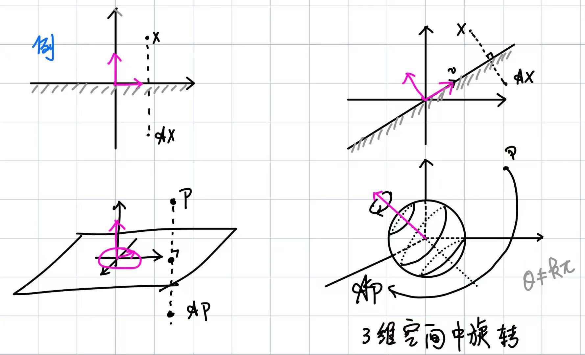

线性映射 / 特征值与特征向量 定义 （线性变换的特征值,特征向量以及特征子空间） 设\({\mathscr A}\)为\(n\)维\({\mathbb F}\)-向量空间\(V\)上的线性变换. 若存在\(\lambda\in F\)以及非零向量\(\alpha\in V\),使得 \[{\mathscr A}\alpha = \lambda\alpha,\] 则称\(\lambda\)为\({\mathscr A}\)的一个特征值, 称\(\alpha\)为属于特征值\(\lambda\)的一个特征向量. 称 \[{\textcolor[rgb]{0,0,1}{V_{\mathscr A}(\lambda)}} :=\ker({\mathscr A}-\lambda \varepsilon)=\{\alpha\in V\mid {\mathscr A}\alpha=\lambda\alpha\}\] 为属于\(\lambda\)的特征子空间. 1e421ae12c6832e0ba34a69ad44cb6b